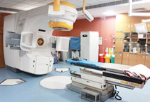

THE APOLLO WORLD OF CARE
ASSURING ADVANCE ACCESSIBLE
Our team of over 7000 doctors join to give you the best of mordern healthcare to ensure you stay healthy always.
WHY CHOOSE APOLLO?
CLINICAL EXCELLENCE

HOSPITALITY AND LOVING CARE

SUPERIOR TECHNOLOGY
QUALITY CARE AT 1/10 COST
COLLABORATIVE CARE

ROBOTIC SURGICAL SYSTEM
Dr. Prakash Singh
Vascular Surgeon
APOLLO HOSPITAL
BOOK AN APPOINTMENT
DIRECTOR
MS, MCH, MBBS,38 YEARS OF EXPERIENCE
Vascular Surgeon
APOLLO HOSPITAL
BOOK AN APPOINTMENT
DIRECTOR
MS, MCH, MBBS,38 YEARS OF EXPERIENCE
MS, MCH, MBBS,38 YEARS OF EXPERIENCE
PROFFESIONAL JOURNEY
ABOUT DOCTOR:-
*Presently working as the Head of Spine Surgery department at Apollo Hospital, New Delhi
*Performed all kinds of cranial and spinal surgeries such as Microsurgical excision of brain tumours ,Transspenoidal pituitary surgery, Intracranial aneurysm surgery, Neuroendoscopic surgery, Microdiscectomy.
*Expertise includes Spinal Tumors, Spinal Stabilization, Minimally Invasive Spine Surgery, Cervical Disc Replacement and Kyphoplasty with excellent outcomes.
*Awarded the Vishishth Seva Medal by the President of India
SPECIALIZATION:-
*Spine Surgery
*Cranial and spinal surgeries such as Microsurgical excision of brain tumours
*Transspenoidal pituitary surgery
*Intracranial aneurysm surgery
*Microdiscectomy,Spinal Tumors
*Spinal Stabilization
*Cervical Disc Replacement.
AWARDS INFORMATION:-
1.Vashisht Seva Medal by President of India
2.Best Paper Award, AFMRC (2001)
EDUCATION:-
*MCh
*MS
*MBBS
WORK EXPERIENCE OF DR. PRAKASH SINGH:-
*HOD, Saket City Hospital, Saket, New Delhi, 2016
*Head of Department, Max Superspecialty Hospital, Mohali, 2013
*Head of Department, Army Hospital, Pune, 2012
*Senior Resident, PGI, Chandigarh, 1988
*Senior Resident, AFMC, Pune, 1983